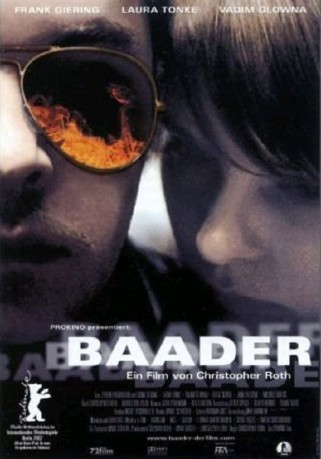

#11072 Baader
 
 IMDB-Wertung: 5.5 / 10
IMDB-Wertung: 5.5 / 10  Metascore: 0
Metascore: 0 
Gangster, Autofreak, Frauenheld. Unberechenbar, narzisstisch, charismatisch. Der Terrorist Andreas Baader inszeniert sein kurzes Leben wie einen gigantischen Kinofilm. Mit ihm und seiner Geliebten Gudrun Ensslin in den Hauptrollen . Er lebt wild und gefährlich. Die lässige Souveränität, mit der er Autos knackt, Rauschgift konsumiert, Banken ausraubt und Bomben baut, fasziniert intellektuelle Mitstreiter wie die Journalistin Ulrike Meinhof und den Juristen Kurt Wagner. Als RAF (Rote Armee Fraktion) sagen sie dem Staat den Kampf an. Bald gerät Baader in das Fadenkreuz von BKA-Chef Kurt Krone.
Jahr: 2002
Dauer: 109 Minuten
FSK: 12
Land: Deutschland Studio: Prokino FilmverleihTonspuren:
Untertitel:
Auflösung: 1080p (1920x1056) Größe: 5724 MB
Genre: Action, Thriller, Drama, Krimi, Biographie
Regisseur: Christopher Roth
Drehbuch: Christopher Roth, Moritz von Uslar
Soundtrack:
Darsteller:
- Frank Giering als Andreas Baader
 Laura Tonke als Gudrun Ensslin
Laura Tonke als Gudrun Ensslin- Wolfgang Riehm als Tagesschausprecher
 Daniel Krauss als Diedrich
Daniel Krauss als Diedrich Jana Pallaske als Karin
Jana Pallaske als Karin- Zsolt Bács als Übersetzer
- Can Taylanlar als Mario
- Hinnerk Schönemann als Victor
- Sarah Riedel als Inga
- Angie Ojciec als Claudia
- Bastian Trost als Jan
- Sebastian Weberstein als Erwin
- Ludger Blanke als Polizist
- Birge Schade als Ulrike Meinhof
- Wolfgang Ritter als Vollzugsbeamter
- Ellen Schlootz als Maria
- Andreas Hofer als Ziebland
- Rudi Knauss als SPD Bezirksvorsitzender
 Vadim Glowna als Kurt Krone
Vadim Glowna als Kurt Krone- Attila Saygel als Gudruns Mann
- Marion Levi als Mädchen in Bar
- Oliver Krönke als Seidlein
- Michael Sideris als Kurt Wagner
- Volkert Matzen als Richter
- Axel John Wieder als Rechtsanwalt
- Jesko Fezer als Rechtsanwalt
- Thilo Wermke als Rechtsanwalt
- Martin Rauhaus als Apotheker
- Peter Hausmann als Carlo Friedrich
- Eric P. Caspar als Innenminister
- Thomas Frey als Kanzleramtsminister
- Dieter Wardetzky als Staatssekretär
- Peter Rühring als Pastor
- Bettina Hoppe als Birgit
- Holger Krabel als Polizist
- Anna Böttcher als Marion
- Joachim Trefz als Institutsleiter
- Uwe Steinbruch als Justizbeamter
- Johannes Schmidt als Justizbeamter
- Karl-Günther Garbisch als Gefängniswärter
- Hadj Belhecene als Achmed
- Moritz von Uslar als Wolf
- Hans Richter als Autovermietung
- Michael Günther als Karl Rossmann
- Oliver Brod als Polizist im Zug
- John Yamoah als Afrikanischer Politiker
- Vera Baranyai als Lolita
- Matti Braun als Henry
- Urs Fabian Winiger als Tony
- Nils Nelleßen als Streifenpolizist
Datei: X:\2002\Baader (2002, FSK12, 1920x1056).mkv seit 24.04.2019
Festplatte: Gemischt-01+Anime
 Es gibt insgesamt 93 Filme in der Gruppe '2002'
Es gibt insgesamt 93 Filme in der Gruppe '2002'